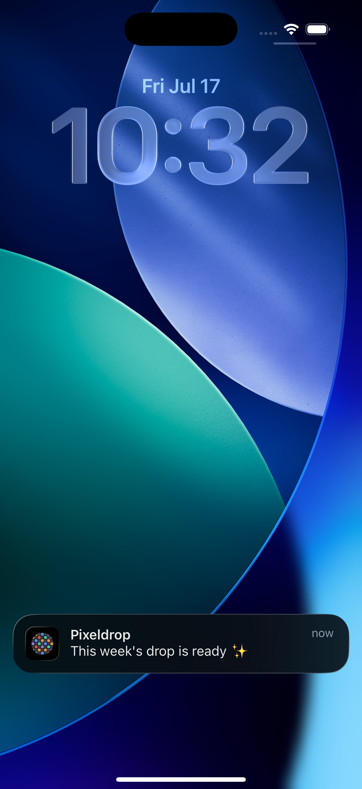
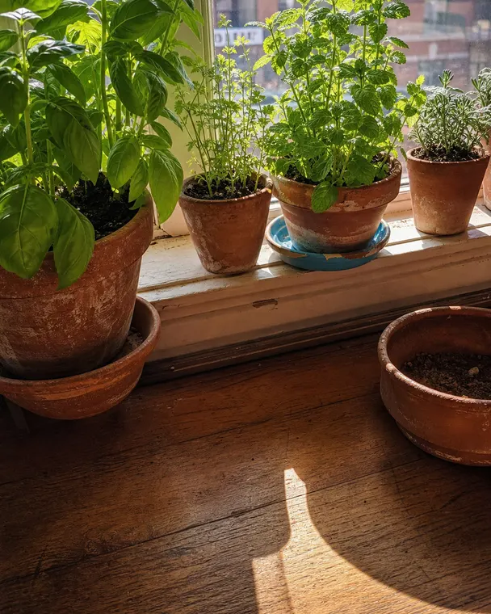
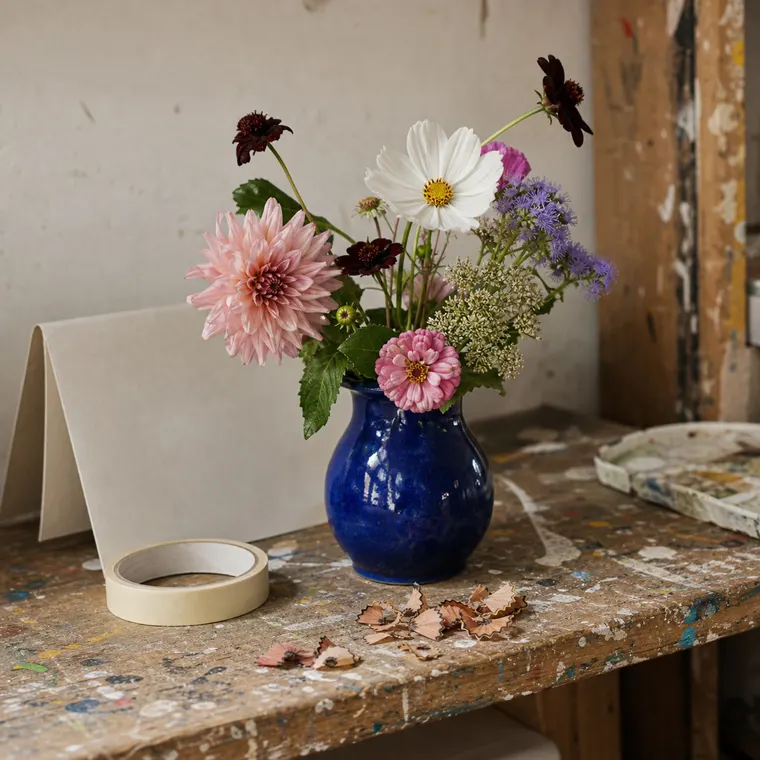
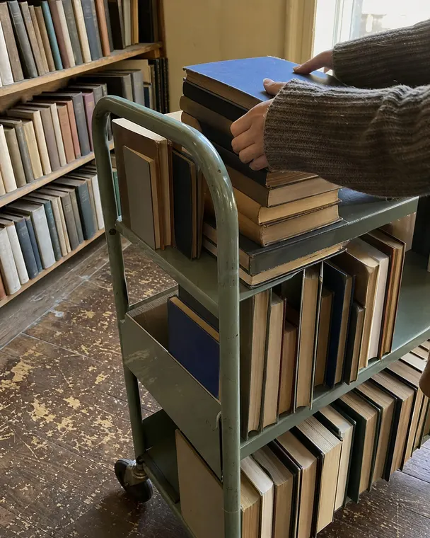
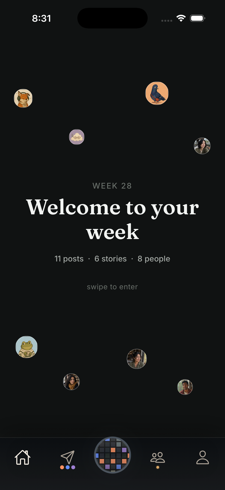
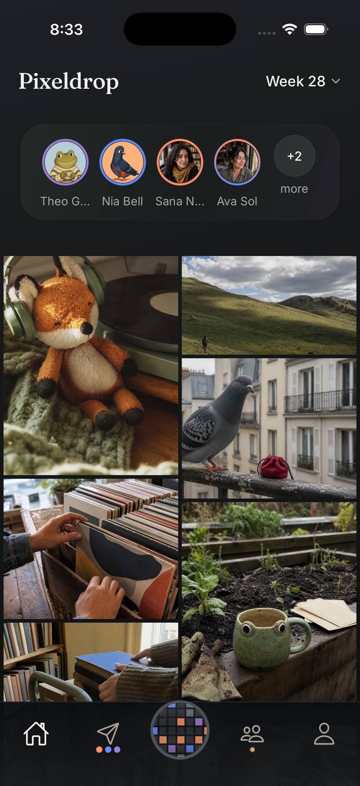
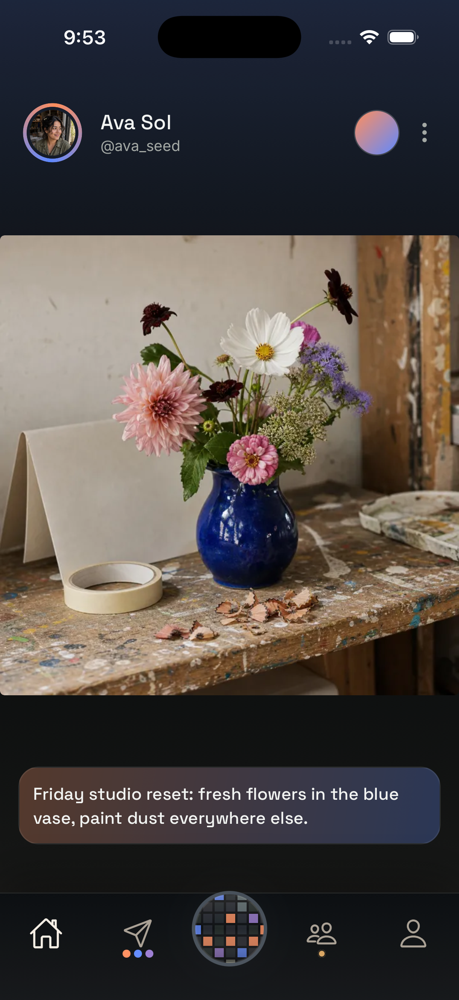
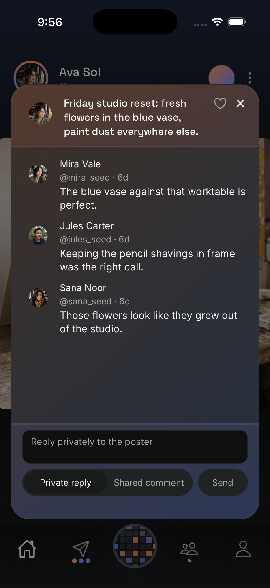
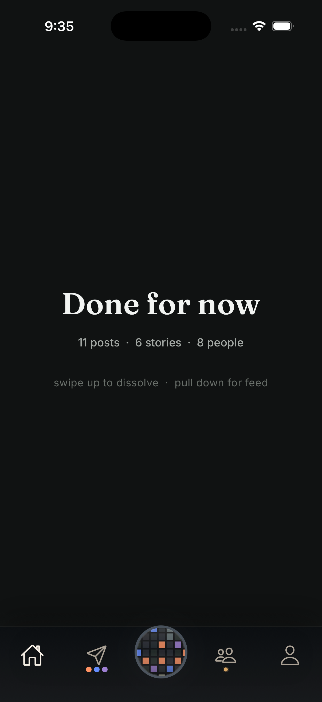

The Drop is ready
Pixeldrop is a photo app with a weekly rhythm. Gather moments as they happen. Then, once a week, the Drop opens for the people you've chosen, all at once. Read the week, reply to the people you love, and be done.



One Drop, start to finish
This is the whole loop: what opens, what you see, and the ending you actually reach.

The Drop is ready

The week opens

Everyone, once

Reading

Answering

The ending
That's the product. It happens once a week, and it ends.
Who it's for
Group your people the way you actually think of them: family, the group chat, old friends. Every moment you share is for the circles you choose, and your choices stay yours. Nobody sees how you've organized the people in your life.
The first way to respond is a message to the person, with their moment attached. Conversations start where they'd naturally happen, between the two of you.
Profiles and collections hold what's worth keeping. A drop ends. The things you loved in it don't disappear.
Every drop starts conversations. Messages keeps them in one place: private replies arrive with the moment attached, so you both know exactly what you're talking about.
How it's built
Pixeldrop is currently built by one person, with a lot of help from AI. The code gets written fast. The decisions about what this app values, and what it will never do to the people using it, stay human.
Pixeldrop does not profile you and is not built to sell your attention. The long-term plan is federation: many small servers run by people, like personal blogs or group chats. Small servers do not need ads to survive, and this one never will.
A small private beta is running now. A public beta is targeted for September 2026. Open source and federation come after the core is stable and reviewed. If any of this changes, this page will change with it.
Where things stand
Pixeldrop is in private beta with a handful of people, opening real weekly drops together. This stage is deliberately small: the weekly ritual has to feel right for ten people before it can mean anything for more.
FAQ
One shared week. Everyone gathers moments as the week happens. On Friday evening the week opens for everyone at once. You read it start to finish. There's a beginning and an end.
Friday evening, for everyone on the same rhythm. Half the point is knowing the people you love are opening the same week you are.
Circles are how you group your people. Every moment is shared to the circles you choose. The Lens is your own viewing filter. See just family, or just the friends you're missing, without your choices ever being visible to anyone else.
Mostly by rhythm and ending. Nothing here is ranked or engineered to keep you scrolling. The week has a shape, you reach the end of it, and the app is designed to be put down. Pixeldrop isn't trying to replace anything. It's trying to be the best place for the moments that matter to a smaller set of people.
Not yet, unless you're in the first beta group. Pixeldrop is deliberately small right now while the weekly ritual gets proven with real people. A public beta is targeted for September 2026.
General interest, beta questions, or want to help build Pixeldrop? Reach out: admin@pixeldrop.social